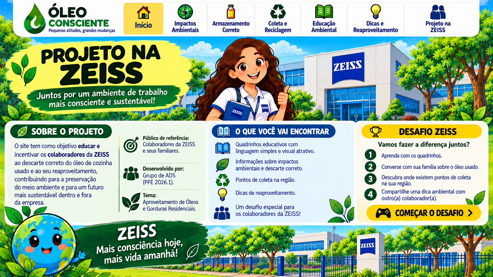

ZEISS e sustentabilidade · ODS 12
Colaboradores por um futuro mais consciente 🌱
Um guia educativo para colaboradores da ZEISS aprenderem a descartar e reaproveitar corretamente o óleo de cozinha usado.

InícioImpactos ambientaisArmazenamento corretoColeta e reciclagemEducação ambientalDicas e reaproveitamentoProjeto na ZEISSComeçar o desafioConsciência ambiental no dia a dia
Projeto educativo para colaboradores da ZEISS
O Óleo Consciente incentiva os colaboradores e suas famílias a adotarem práticas responsáveis de armazenamento, descarte e reaproveitamento do óleo de cozinha usado.

Da cozinha ao cuidado com o planeta
O que fazer com o óleo usado?
1. Espere esfriar
Depois do preparo dos alimentos, deixe o óleo esfriar completamente.
2. Guarde bem
Coloque em uma garrafa plástica resistente, limpa e bem fechada.
3. Entregue corretamente
Leve a um ponto de coleta que receba óleo de cozinha usado. Nunca jogue na pia, no vaso ou no solo.
Todos podem participar
Como os colaboradores podem participar?
Aprenda
Explore os quadrinhos, as dicas e as orientações de descarte seguro.
Compartilhe
Converse com familiares e colegas sobre a destinação correta do óleo usado.
Pratique
Identifique pontos de coleta autorizados na sua região e encaminhe o óleo corretamente.
🎮 Aprender brincando
Trilha do Óleo Consciente
Topa o desafio? Teste seus conhecimentos, acumule pontos e descubra como suas escolhas podem proteger o planeta!
Depois da coleta
O óleo pode ganhar um novo destino!
Quando encaminhado a organizações apropriadas, o óleo usado pode servir de matéria-prima para produtos como sabão e biodiesel. Atenção: fabricar sabão com soda cáustica envolve riscos e exige orientação técnica e cuidados rigorosos de segurança.
Nosso objetivo é transformar informação em atitudes responsáveis, no trabalho e em casa.